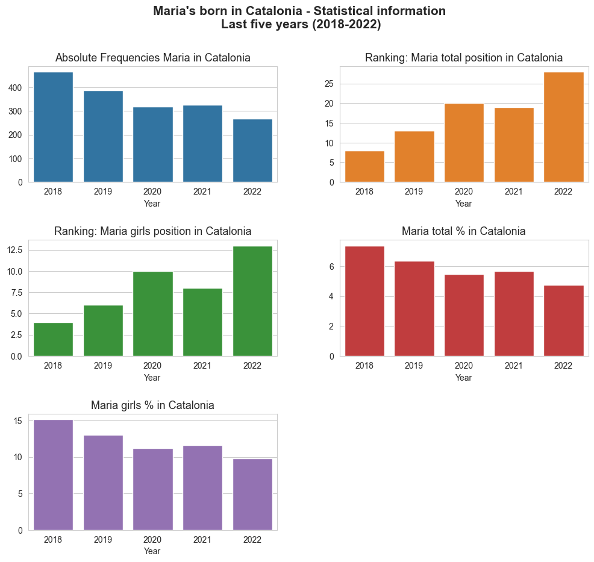
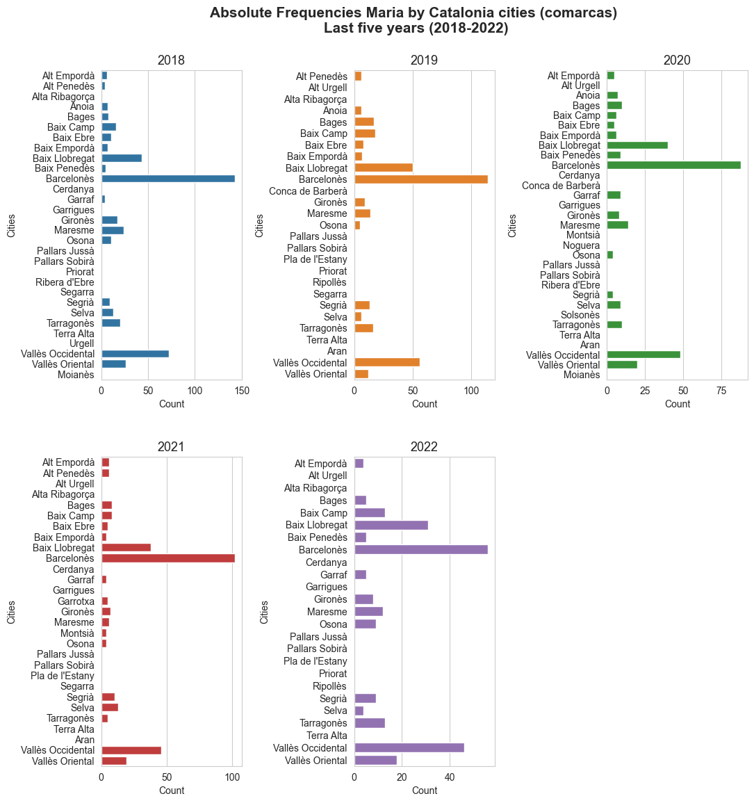
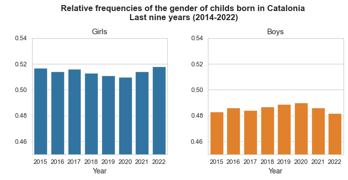
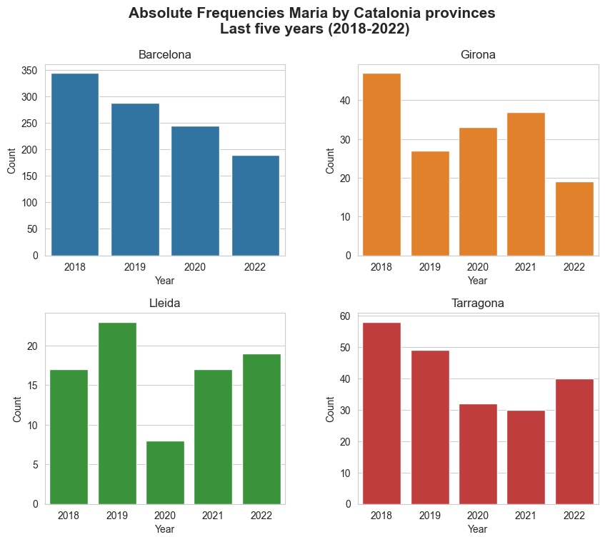
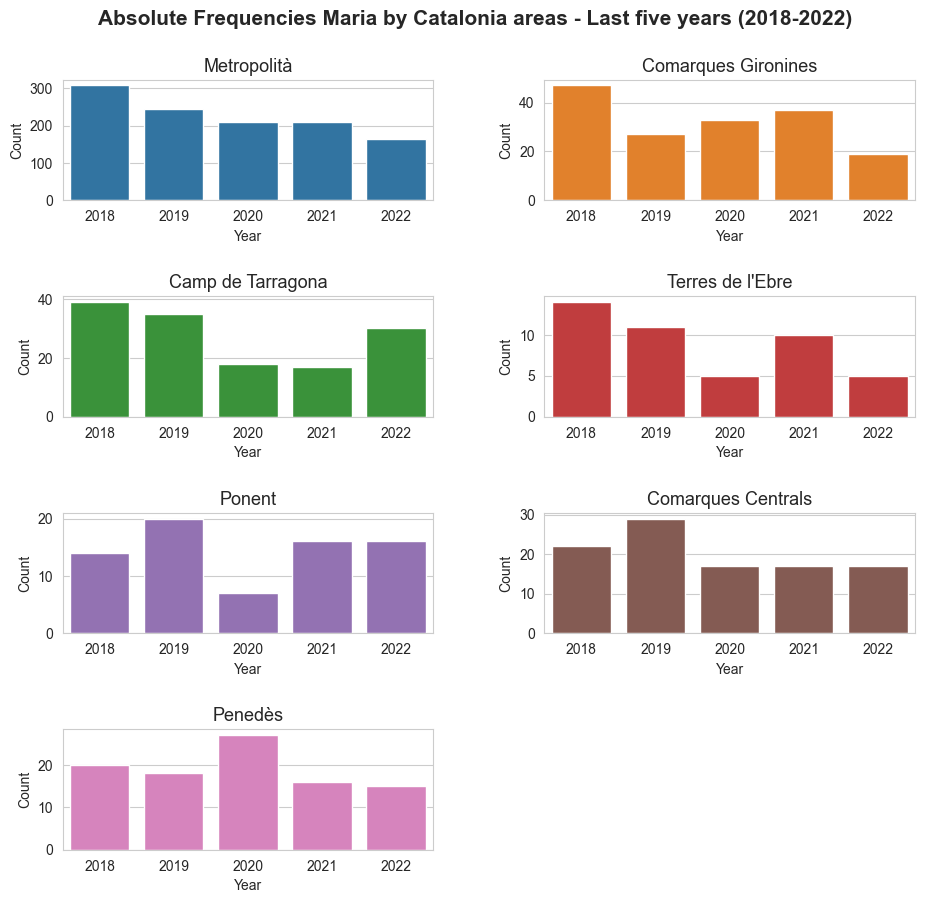

Extracting and analyzing data form idescat.com#
Requirements#
import requests
import pandas as pd
pd.options.mode.chained_assignment = None
import numpy as np
import seaborn as sns
import matplotlib.pyplot as plt
from bs4 import BeautifulSoup
sns.set_style("whitegrid")
Maria’s analysis in Catalonia#
Extracting and processing the data#
years = ['2018', '2019', '2020', '2021', '2022']
Maria_abs_freq, Maria_total_position, Maria_girls_position, Maria_total_percent, Maria_girls_percent = [], [], [], [], []
for year in years :
url = f'https://api.idescat.cat/onomastica/v1/nadons/dades.json?id=40683&t={year}&lang=es'
response = requests.get(url)
data_json = response.json()
Maria_abs_freq.append(data_json['onomastica_nadons']['ff']['f']['pos1']['v']) # abs freq name Maria over the names of childs born in Catalonia in {year}
Maria_total_position.append(data_json['onomastica_nadons']['ff']['f']['rank']['total']) # rank of name Maria over the names of childs born in Catalonia in {year}
Maria_girls_position.append(data_json['onomastica_nadons']['ff']['f']['rank']['sex']) # rank of name Maria over the names of girls born in Catalonia in {year}
Maria_total_percent.append(data_json['onomastica_nadons']['ff']['f']['pos1']['w']['total']) # % of childs born in Catalonia in {year} whose name is Maria
Maria_girls_percent.append(data_json['onomastica_nadons']['ff']['f']['pos1']['w']['sex']) # % of girls born in Catalonia in {year} whose name is Maria
Maria_dict = dict()
Maria_dict['years'] = years
Maria_dict['Maria_abs_freq'] = Maria_abs_freq
Maria_dict['Maria_total_position'] = Maria_total_position
Maria_dict['Maria_girls_position'] = Maria_girls_position
Maria_dict['Maria_total_percent'] = Maria_total_percent
Maria_dict['Maria_girls_percent'] = Maria_girls_percent
Maria_df = pd.DataFrame(Maria_dict)
for col_name in Maria_df.columns :
if col_name in ['Maria_abs_freq', 'Maria_total_position', 'Maria_girls_position'] :
Maria_df[col_name] = Maria_df[col_name].astype('int64')
elif col_name in ['Maria_total_percent', 'Maria_girls_percent'] :
Maria_df[col_name] = Maria_df[col_name].astype('float64')
# Data-frame with the data
print('Maria\'s analysis in Catalonia\n')
display(Maria_df)
Maria's analysis in Catalonia
| years | Maria_abs_freq | Maria_total_position | Maria_girls_position | Maria_total_percent | Maria_girls_percent | |
|---|---|---|---|---|---|---|
| 0 | 2018 | 466 | 8 | 4 | 7.38 | 15.15 |
| 1 | 2019 | 387 | 13 | 6 | 6.36 | 13.00 |
| 2 | 2020 | 318 | 20 | 10 | 5.49 | 11.23 |
| 3 | 2021 | 327 | 19 | 8 | 5.67 | 11.65 |
| 4 | 2022 | 267 | 28 | 13 | 4.74 | 9.83 |
Plotting the results#
selected_columns = [x for x in Maria_df.columns if x != 'years']
titles = ["Absolute Frequencies Maria in Catalonia", "Ranking: Maria total position in Catalonia",
"Ranking: Maria girls position in Catalonia", "Maria total % in Catalonia", "Maria girls % in Catalonia"]
# Define the number of rows and columns for the matrix plot
num_cols = 2 # You can adjust the number of columns as needed
num_rows = int(np.ceil(len(selected_columns) / num_cols))
# Create a subplot with the specified number of rows and columns
fig, axes = plt.subplots(num_rows, num_cols, figsize=(12, 10))
# Flatten the axes array to make it easier to iterate
axes = axes.flatten()
colors = sns.color_palette("tab10", len(selected_columns))
# Loop through each 'geo' and create a subplot in the matrix
for (i, col_name), color, title in zip(enumerate(selected_columns), colors, titles) :
ax = axes[i] # Get the current axis
sns.barplot(x="years", y=col_name, data=Maria_df, color=color, ax=ax)
ax.set_title(f"{title}", fontsize=13)
xticks_index = np.arange(0, len(Maria_df), 1)
ax.set_xticks(xticks_index)
ax.tick_params(axis='x', rotation=0)
ax.set_xlabel('Year')
ax.set_ylabel('')
# Remove any unused subplots in case the number of 'geo' values is less than num_rows * num_cols
for j in range(len(selected_columns), num_rows * num_cols):
fig.delaxes(axes[j])
plt.suptitle('Maria\'s born in Catalonia - Statistical information\n Last five years (2018-2022)', fontsize=15, y=0.98, weight='bold') # Establishing a general tittle for the plot.
plt.subplots_adjust(hspace=0.5, wspace=0.25) # Adjust vertical (hspace) and horizontal (wspace) spacing
fig.savefig('Marias_Catalonia' + '.jpg', format='jpg', dpi=550)
# plt.tight_layout()
plt.show()

Maria’s analysis in Catalonia by city (comarca)#
Extracting and processing the data#
print('Maria\'s analysis in Catalonia by city (comarca)\n')
years = ['2018', '2019', '2020', '2021', '2022']
Maria_df_dict = dict()
for com_id in range(0, 42): # 42 = len(data_json['onomastica_nadons']['ff']['f']) - 1
Maria_abs_freq, Maria_total_position, Maria_girls_position, Maria_total_percent, Maria_girls_percent = [], [], [], [], []
for year in years :
url = f'https://api.idescat.cat/onomastica/v1/nadons/dades.json?id=40683&class=com&t={year}&lang=es'
response = requests.get(url)
data_json = response.json()
Maria_abs_freq.append(data_json['onomastica_nadons']['ff']['f'][com_id]['pos1']['v']) # abs freq name Maria over the names of childs born in comarca {com_id} in {year}
Maria_total_position.append(data_json['onomastica_nadons']['ff']['f'][com_id]['rank']['total']) # rank of name Maria over the names of childs born in comarca {com_id} in {year}
Maria_girls_position.append(data_json['onomastica_nadons']['ff']['f'][com_id]['rank']['sex']) # rank of name Maria over the names of girls born in comarca {com_id} in {year}
Maria_total_percent.append(data_json['onomastica_nadons']['ff']['f'][com_id]['pos1']['w']['total']) # % of childs born in comarca {com_id} in {year} whose name is Maria
Maria_girls_percent.append(data_json['onomastica_nadons']['ff']['f'][com_id]['pos1']['w']['sex']) # % of girls born in comarca {com_id} in {year} whose name is Maria
Maria_dict = dict()
Maria_dict['years'] = years
Maria_dict['Maria_abs_freq'] = Maria_abs_freq
Maria_dict['Maria_total_position'] = Maria_total_position
Maria_dict['Maria_girls_position'] = Maria_girls_position
Maria_dict['Maria_total_percent'] = Maria_total_percent
Maria_dict['Maria_girls_percent'] = Maria_girls_percent
com = data_json['onomastica_nadons']['ff']['f'][com_id]['c']['content']
Maria_df_dict[com] = pd.DataFrame(Maria_dict)
Maria's analysis in Catalonia by city (comarca)
### Catalonia city (comarca) with more Maria\'s born by year
Maria_abs_freq_year = dict()
for year in ['2018', '2019', '2020', '2021', '2022'] :
Maria_abs_freq_city = dict()
for com in Maria_df_dict.keys() :
value = Maria_df_dict[com].loc[Maria_df_dict[com]['years'] == year, 'Maria_abs_freq'].iloc[0]
if value != '_' : # To avoid the cities with missing value.
Maria_abs_freq_city[com] = value
Maria_abs_freq_year[year] = Maria_abs_freq_city
Maria_abs_freq_values = dict()
Maria_abs_freq_index = dict()
city_max_Maria = dict()
years = ['2018', '2019', '2020', '2021', '2022']
for year in years :
Maria_abs_freq_values[year] = np.array([x for x in Maria_abs_freq_year[year].values()], dtype=int)
Maria_abs_freq_index[year] = np.array([x for x in Maria_abs_freq_year[year].keys()])
city_max_Maria[year] = Maria_abs_freq_index[year][np.argmax(Maria_abs_freq_values[year])]
print(f'Catalonia city (comarca) with more Maria\'s born in {year} -->', city_max_Maria[year])
Catalonia city (comarca) with more Maria's born in 2018 --> Barcelonès
Catalonia city (comarca) with more Maria's born in 2019 --> Barcelonès
Catalonia city (comarca) with more Maria's born in 2020 --> Barcelonès
Catalonia city (comarca) with more Maria's born in 2021 --> Barcelonès
Catalonia city (comarca) with more Maria's born in 2022 --> Barcelonès
Plotting the results#
# Define the number of rows and columns for the matrix plot
num_cols = 3 # You can adjust the number of columns as needed
num_rows = int(np.ceil(len(years) / num_cols))
# Create a subplot with the specified number of rows and columns
fig, axes = plt.subplots(num_rows, num_cols, figsize=(12, 13))
# Flatten the axes array to make it easier to iterate
axes = axes.flatten()
colors = sns.color_palette("tab10", len(years))
# Loop through each 'geo' and create a subplot in the matrix
for i, color, year in zip(range(0,len(years)), colors, years) :
ax = axes[i] # Get the current axis
sns.barplot(x=Maria_abs_freq_values[year], y=Maria_abs_freq_index[year], color=color, ax=ax)
ax.set_title(f"{year}", fontsize=13)
ax.tick_params(axis='x', rotation=0)
ax.set_xlabel('Count')
ax.set_ylabel('Cities')
# Remove any unused subplots in case the number of 'geo' values is less than num_rows * num_cols
for j in range(len(years), num_rows * num_cols):
fig.delaxes(axes[j])
plt.suptitle('Absolute Frequencies Maria by Catalonia cities (comarcas)\n Last five years (2018-2022)', fontsize=15, y=0.95, weight='bold') # Establishing a general tittle for the plot.
plt.subplots_adjust(hspace=0.25, wspace=0.8) # Adjust vertical (hspace) and horizontal (wspace) spacing
# fig.savefig('Marias_Areas_Catalonia' + '.jpg', format='jpg', dpi=550)
# plt.tight_layout()
plt.show()

Gender info for the childs born in Catalonia in the last nine years (2014-2022)#
Extracting and processing the data#
def try_float(x):
try:
return float(x)
except ValueError:
return None
url = 'https://www.idescat.cat/indicadors/?id=aec&n=15237&fil=43&lang=en'
response = requests.get(url)
soup = BeautifulSoup(response.text, 'html.parser')
table = soup.find('table')
columns = table.find(class_="cap")
columns_html = columns.select("thead th")
columns_list = []
for i in range(1,len(columns_html)) :
columns_list.append(columns.select("thead th")[i].text)
columns_list = ['Year'] + columns_list
tr_list = table.select('tr')
useful_info_index = range(1,(len(tr_list)-3))
rows = dict()
for i , r in enumerate(useful_info_index) :
text_data = tr_list[r].text
row_data = text_data.replace('\n', ' ').split()
row_data = [x.replace(',', '.') for x in row_data]
row_data = [try_float(x) for x in row_data]
row_data = [x for x in row_data if x != None]
rows[i] = row_data
df = pd.DataFrame(rows)
df = df.T
df.columns = columns_list
df['Year'] = df['Year'].astype('int')
df['Boys_prop'] = round(df['Boys'] / df['Total'], 3)
df['Girls_prop'] = round(df['Girls'] / df['Total'], 3)
# Data-frame with the data
print('Gender info for the childs born in Catalonia in the last nine years (2014-2022)\n')
display(df)
Gender info for the childs born in Catalonia in the last nine years (2014-2022)
| Year | Boys | Girls | Total | Boys_prop | Girls_prop | |
|---|---|---|---|---|---|---|
| 0 | 2022 | 29.187 | 27.195 | 56.382 | 0.518 | 0.482 |
| 1 | 2021 | 29.604 | 28.030 | 57.634 | 0.514 | 0.486 |
| 2 | 2020 | 29.832 | 28.632 | 58.464 | 0.510 | 0.490 |
| 3 | 2019 | 31.453 | 30.095 | 61.548 | 0.511 | 0.489 |
| 4 | 2018 | 32.623 | 30.943 | 63.566 | 0.513 | 0.487 |
| 5 | 2017 | 34.462 | 32.341 | 66.803 | 0.516 | 0.484 |
| 6 | 2016 | 35.435 | 33.539 | 68.974 | 0.514 | 0.486 |
| 7 | 2015 | 36.406 | 34.044 | 70.450 | 0.517 | 0.483 |
Plotting the results#
selected_columns = [x for x in df.columns if x in ['Boys_prop', 'Girls_prop']]
# Define the number of rows and columns for the matrix plot
num_cols = 2 # You can adjust the number of columns as needed
num_rows = int(np.ceil(len(selected_columns) / num_cols))
# Create a subplot with the specified number of rows and columns
fig, axes = plt.subplots(num_rows, num_cols, figsize=(8, 3))
# Flatten the axes array to make it easier to iterate
axes = axes.flatten()
colors = sns.color_palette("tab10", len(selected_columns))
titles = ['Girls', 'Boys']
# Loop through each 'geo' and create a subplot in the matrix
for i, color, col_name, title in zip(range(0,len(selected_columns)), colors, selected_columns, titles) :
ax = axes[i] # Get the current axis
sns.barplot(x="Year", y=col_name, data=df, color=color, ax=ax)
ax.set_title(f"{title}", fontsize=11)
xticks_index = np.arange(0, len(df), 1)
ax.set_xticks(xticks_index)
ax.tick_params(axis='x', rotation=0, labelsize=9)
ax.tick_params(axis='y', rotation=0, labelsize=9)
ax.set_xlabel('Year')
ax.set_ylabel(' ')
ax.set_ylim([0.45, 0.54])
# Remove any unused subplots in case the number of 'geo' values is less than num_rows * num_cols
for j in range(len(selected_columns), num_rows * num_cols):
fig.delaxes(axes[j])
plt.suptitle('Relative frequencies of the gender of childs born in Catalonia\n Last nine years (2014-2022)', fontsize=12, y=1.1, weight='bold') # Establishing a general tittle for the plot.
plt.subplots_adjust(hspace=0.6, wspace=0.3) # Adjust vertical (hspace) and horizontal (wspace) spacing
# fig.savefig('Gender_born_Catalonia' + '.jpg', format='jpg', dpi=550)
# plt.tight_layout()
plt.show()

Maria’s analysis in Catalonia by province#
Extracting and processing the data#
years = ['2018', '2019', '2020', '2021', '2022']
Maria_df_dict = dict()
for prov_id in range(0, 4): # 4 = len(data_json['onomastica_nadons']['ff']['f']) - 1
Maria_abs_freq, Maria_total_position, Maria_girls_position, Maria_total_percent, Maria_girls_percent = [], [], [], [], []
for year in years :
url = f'https://api.idescat.cat/onomastica/v1/nadons/dades.json?id=40683&class=prov&t={year}&lang=es'
response = requests.get(url)
data_json = response.json()
Maria_abs_freq.append(data_json['onomastica_nadons']['ff']['f'][prov_id]['pos1']['v']) # abs freq name Maria over the names of childs born in province {prov_id} in {year}
Maria_total_position.append(data_json['onomastica_nadons']['ff']['f'][prov_id]['rank']['total']) # rank of name Maria over the names of childs born in province {prov_id} in {year}
Maria_girls_position.append(data_json['onomastica_nadons']['ff']['f'][prov_id]['rank']['sex']) # rank of name Maria over the names of girls born in province {prov_id} in {year}
Maria_total_percent.append(data_json['onomastica_nadons']['ff']['f'][prov_id]['pos1']['w']['total']) # % of childs born in province {prov_id} in {year} whose name is Maria
Maria_girls_percent.append(data_json['onomastica_nadons']['ff']['f'][prov_id]['pos1']['w']['sex']) # % of girls born in province {prov_id} in {year} whose name is Maria
Maria_dict = dict()
Maria_dict['years'] = years
Maria_dict['Maria_abs_freq'] = Maria_abs_freq
Maria_dict['Maria_total_position'] = Maria_total_position
Maria_dict['Maria_girls_position'] = Maria_girls_position
Maria_dict['Maria_total_percent'] = Maria_total_percent
Maria_dict['Maria_girls_percent'] = Maria_girls_percent
prov = data_json['onomastica_nadons']['ff']['f'][prov_id]['c']['content']
Maria_df_dict[prov] = pd.DataFrame(Maria_dict)
print('Maria\'s analysis in Catalonia by province')
for prov in Maria_df_dict.keys():
print('-----------------------------------------------------------------------------------------------')
print(prov)
display(Maria_df_dict[prov])
Maria's analysis in Catalonia by province
-----------------------------------------------------------------------------------------------
Barcelona
| years | Maria_abs_freq | Maria_total_position | Maria_girls_position | Maria_total_percent | Maria_girls_percent | |
|---|---|---|---|---|---|---|
| 0 | 2018 | 344 | 11 | 5 | 7.41 | 15.19 |
| 1 | 2019 | 288 | 14 | 7 | 6.46 | 13.17 |
| 2 | 2020 | 245 | 19 | 9 | 5.81 | 11.89 |
| 3 | 2021 | _ | _ | _ | _ | _ |
| 4 | 2022 | 189 | 33 | 14 | 4.59 | 9.56 |
-----------------------------------------------------------------------------------------------
Girona
| years | Maria_abs_freq | Maria_total_position | Maria_girls_position | Maria_total_percent | Maria_girls_percent | |
|---|---|---|---|---|---|---|
| 0 | 2018 | 47 | 6 | 2 | 7.00 | 14.43 |
| 1 | 2019 | 27 | 31 | 16 | 4.21 | 8.62 |
| 2 | 2020 | 33 | 21 | 11 | 5.24 | 10.79 |
| 3 | 2021 | 37 | 12 | 5 | 6.10 | 12.45 |
| 4 | 2022 | 19 | 47 | 22 | 3.21 | 6.52 |
-----------------------------------------------------------------------------------------------
Lleida
| years | Maria_abs_freq | Maria_total_position | Maria_girls_position | Maria_total_percent | Maria_girls_percent | |
|---|---|---|---|---|---|---|
| 0 | 2018 | 17 | 28 | 13 | 4.89 | 10.15 |
| 1 | 2019 | 23 | 8 | 3 | 6.69 | 13.71 |
| 2 | 2020 | 8 | 69 | 38 | 2.44 | 4.84 |
| 3 | 2021 | 17 | 19 | 7 | 5.30 | 11.06 |
| 4 | 2022 | 19 | 15 | 7 | 5.89 | 12.22 |
-----------------------------------------------------------------------------------------------
Tarragona
| years | Maria_abs_freq | Maria_total_position | Maria_girls_position | Maria_total_percent | Maria_girls_percent | |
|---|---|---|---|---|---|---|
| 0 | 2018 | 58 | 4 | 2 | 8.81 | 18.22 |
| 1 | 2019 | 49 | 6 | 4 | 7.60 | 15.85 |
| 2 | 2020 | 32 | 19 | 8 | 5.23 | 10.62 |
| 3 | 2021 | 30 | 26 | 12 | 5.00 | 10.33 |
| 4 | 2022 | 40 | 10 | 5 | 6.66 | 13.70 |
# Catalonia province with more Maria's born in 2022
Maria_abs_freq_2022 = dict()
for prov in Maria_df_dict.keys():
Maria_abs_freq_2022[prov] = Maria_df_dict[prov].loc[Maria_df_dict[prov]['years'] == '2022', 'Maria_abs_freq'].iloc[0]
Maria_abs_freq_2022_values = np.array([x for x in Maria_abs_freq_2022.values()], dtype=int)
Maria_abs_freq_2022_index = np.array([x for x in Maria_abs_freq_2022.keys()])
prov_max_Maria_2022 = Maria_abs_freq_2022_index[np.argmax(Maria_abs_freq_2022_values)]
print('Catalonia province with more Maria\'s born in 2022 -->', prov_max_Maria_2022)
Catalonia province with more Maria's born in 2022 --> Barcelona
Plotting the results#
Maria_df_dict['Barcelona'] = Maria_df_dict['Barcelona'].drop([3], axis=0)
for prov in Maria_df_dict.keys() :
for col_name in Maria_df_dict[prov].columns :
if col_name in ['Maria_abs_freq', 'Maria_total_position', 'Maria_girls_position'] :
Maria_df_dict[prov][col_name] = Maria_df_dict[prov][col_name].astype('int64')
elif col_name in ['Maria_total_percent', 'Maria_girls_percent'] :
Maria_df_dict[prov][col_name] = Maria_df_dict[prov][col_name].astype('float64')
provinces = Maria_df_dict.keys()
# Define the number of rows and columns for the matrix plot
num_cols = 2 # You can adjust the number of columns as needed
num_rows = int(np.ceil(len(provinces) / num_cols))
# Create a subplot with the specified number of rows and columns
fig, axes = plt.subplots(num_rows, num_cols, figsize=(10, 8))
# Flatten the axes array to make it easier to iterate
axes = axes.flatten()
colors = sns.color_palette("tab10", len(provinces))
# Loop through each 'geo' and create a subplot in the matrix
for i, color, prov in zip(range(0,len(provinces)), colors, provinces) :
ax = axes[i] # Get the current axis
sns.barplot(x="years", y='Maria_abs_freq', data=Maria_df_dict[prov], color=color, ax=ax)
ax.set_title(f"{prov}", fontsize=12)
xticks_index = np.arange(0, len(Maria_df_dict[prov]), 1)
ax.set_xticks(xticks_index)
ax.tick_params(axis='x', rotation=0)
ax.set_xlabel('Year')
ax.set_ylabel('Count')
# Remove any unused subplots in case the number of 'geo' values is less than num_rows * num_cols
for j in range(len(provinces), num_rows * num_cols):
fig.delaxes(axes[j])
plt.suptitle('Absolute Frequencies Maria by Catalonia provinces\n Last five years (2018-2022)', fontsize=15, y=0.98, weight='bold') # Establishing a general tittle for the plot.
plt.subplots_adjust(hspace=0.3, wspace=0.3) # Adjust vertical (hspace) and horizontal (wspace) spacing
# fig.savefig('Marias_Provinces_Catalonia' + '.jpg', format='jpg', dpi=550)
# plt.tight_layout()
plt.show()

Maria’s analysis in Catalonia by area (region)#
Extracting and processing the data#
years = ['2018', '2019', '2020', '2021', '2022']
Maria_df_dict = dict()
for at_id in range(0, 8): # 8 = len(data_json['onomastica_nadons']['ff']['f']) - 1
Maria_abs_freq, Maria_total_position, Maria_girls_position, Maria_total_percent, Maria_girls_percent = [], [], [], [], []
for year in years :
url = f'https://api.idescat.cat/onomastica/v1/nadons/dades.json?id=40683&class=at&t={year}&lang=es'
response = requests.get(url)
data_json = response.json()
Maria_abs_freq.append(data_json['onomastica_nadons']['ff']['f'][at_id]['pos1']['v']) # abs freq name Maria over the names of childs born in comarca {com_id} in {year}
Maria_total_position.append(data_json['onomastica_nadons']['ff']['f'][at_id]['rank']['total']) # rank of name Maria over the names of childs born in comarca {com_id} in {year}
Maria_girls_position.append(data_json['onomastica_nadons']['ff']['f'][at_id]['rank']['sex']) # rank of name Maria over the names of girls born in comarca {com_id} in {year}
Maria_total_percent.append(data_json['onomastica_nadons']['ff']['f'][at_id]['pos1']['w']['total']) # % of childs born in comarca {com_id} in {year} whose name is Maria
Maria_girls_percent.append(data_json['onomastica_nadons']['ff']['f'][at_id]['pos1']['w']['sex']) # % of girls born in comarca {com_id} in {year} whose name is Maria
Maria_dict = dict()
Maria_dict['years'] = years
Maria_dict['Maria_abs_freq'] = Maria_abs_freq
Maria_dict['Maria_total_position'] = Maria_total_position
Maria_dict['Maria_girls_position'] = Maria_girls_position
Maria_dict['Maria_total_percent'] = Maria_total_percent
Maria_dict['Maria_girls_percent'] = Maria_girls_percent
at = data_json['onomastica_nadons']['ff']['f'][at_id]['c']['content']
Maria_df_dict[at] = pd.DataFrame(Maria_dict)
print('Maria\'s analysis in Catalonia by area (region)')
for at in Maria_df_dict.keys():
print('-----------------------------------------------------------------------------------------------')
print(at)
display(Maria_df_dict[at])
Maria's analysis in Catalonia by area (region)
-----------------------------------------------------------------------------------------------
Metropolità
| years | Maria_abs_freq | Maria_total_position | Maria_girls_position | Maria_total_percent | Maria_girls_percent | |
|---|---|---|---|---|---|---|
| 0 | 2018 | 308 | 10 | 5 | 7.67 | 15.66 |
| 1 | 2019 | 246 | 15 | 7 | 6.38 | 13.01 |
| 2 | 2020 | 210 | 22 | 10 | 5.77 | 11.80 |
| 3 | 2021 | 211 | 20 | 8 | 5.77 | 11.86 |
| 4 | 2022 | 164 | 30 | 13 | 4.63 | 9.63 |
-----------------------------------------------------------------------------------------------
Comarques Gironines
| years | Maria_abs_freq | Maria_total_position | Maria_girls_position | Maria_total_percent | Maria_girls_percent | |
|---|---|---|---|---|---|---|
| 0 | 2018 | 47 | 6 | 2 | 7.11 | 14.67 |
| 1 | 2019 | 27 | 31 | 16 | 4.29 | 8.77 |
| 2 | 2020 | 33 | 21 | 11 | 5.30 | 10.90 |
| 3 | 2021 | 37 | 12 | 5 | 6.21 | 12.69 |
| 4 | 2022 | 19 | 44 | 20 | 3.27 | 6.65 |
-----------------------------------------------------------------------------------------------
Camp de Tarragona
| years | Maria_abs_freq | Maria_total_position | Maria_girls_position | Maria_total_percent | Maria_girls_percent | |
|---|---|---|---|---|---|---|
| 0 | 2018 | 39 | 5 | 3 | 8.72 | 18.03 |
| 1 | 2019 | 35 | 3 | 2 | 8.26 | 17.34 |
| 2 | 2020 | 18 | 28 | 13 | 4.42 | 8.89 |
| 3 | 2021 | 17 | 37 | 18 | 4.27 | 8.89 |
| 4 | 2022 | 30 | 5 | 3 | 7.60 | 15.50 |
-----------------------------------------------------------------------------------------------
Terres de l'Ebre
| years | Maria_abs_freq | Maria_total_position | Maria_girls_position | Maria_total_percent | Maria_girls_percent | |
|---|---|---|---|---|---|---|
| 0 | 2018 | 14 | 7 | 4 | 10.52 | 21.41 |
| 1 | 2019 | 11 | 9 | 6 | 8.12 | 16.69 |
| 2 | 2020 | 5 | 30 | 16 | 4.13 | 8.17 |
| 3 | 2021 | 10 | 12 | 6 | 8.26 | 16.34 |
| 4 | 2022 | 5 | 37 | 15 | 4.00 | 8.35 |
-----------------------------------------------------------------------------------------------
Ponent
| years | Maria_abs_freq | Maria_total_position | Maria_girls_position | Maria_total_percent | Maria_girls_percent | |
|---|---|---|---|---|---|---|
| 0 | 2018 | 14 | 31 | 13 | 4.65 | 9.60 |
| 1 | 2019 | 20 | 7 | 4 | 6.78 | 13.93 |
| 2 | 2020 | 7 | 68 | 34 | 2.46 | 4.87 |
| 3 | 2021 | 16 | 15 | 5 | 5.76 | 11.98 |
| 4 | 2022 | 16 | 15 | 8 | 5.71 | 11.85 |
-----------------------------------------------------------------------------------------------
Comarques Centrals
| years | Maria_abs_freq | Maria_total_position | Maria_girls_position | Maria_total_percent | Maria_girls_percent | |
|---|---|---|---|---|---|---|
| 0 | 2018 | 22 | 18 | 8 | 6.46 | 13.56 |
| 1 | 2019 | 29 | 7 | 2 | 8.73 | 17.91 |
| 2 | 2020 | 17 | 19 | 7 | 5.40 | 11.14 |
| 3 | 2021 | 17 | 23 | 11 | 5.52 | 11.09 |
| 4 | 2022 | 17 | 22 | 9 | 5.46 | 11.36 |
-----------------------------------------------------------------------------------------------
Alt Pirineu i Aran
| years | Maria_abs_freq | Maria_total_position | Maria_girls_position | Maria_total_percent | Maria_girls_percent | |
|---|---|---|---|---|---|---|
| 0 | 2018 | _ | _ | _ | _ | _ |
| 1 | 2019 | _ | _ | _ | _ | _ |
| 2 | 2020 | _ | _ | _ | _ | _ |
| 3 | 2021 | 0 | _ | _ | 0.00 | 0.00 |
| 4 | 2022 | _ | _ | _ | _ | _ |
-----------------------------------------------------------------------------------------------
Penedès
| years | Maria_abs_freq | Maria_total_position | Maria_girls_position | Maria_total_percent | Maria_girls_percent | |
|---|---|---|---|---|---|---|
| 0 | 2018 | 20 | 23 | 12 | 5.38 | 11.22 |
| 1 | 2019 | 18 | 24 | 12 | 4.85 | 9.91 |
| 2 | 2020 | 27 | 4 | 3 | 7.59 | 15.86 |
| 3 | 2021 | 16 | 38 | 16 | 4.32 | 9.09 |
| 4 | 2022 | 15 | 38 | 18 | 4.26 | 8.87 |
# Catalonia region with more Maria\'s born in 2022
selected_at = [x for x in Maria_df_dict.keys() if x != 'Alt Pirineu i Aran']
Maria_abs_freq_2022 = dict()
for at in selected_at :
Maria_abs_freq_2022[at] = Maria_df_dict[at].loc[Maria_df_dict[at]['years'] == '2022', 'Maria_abs_freq'].iloc[0]
Maria_abs_freq_2022_values = np.array([x for x in Maria_abs_freq_2022.values()], dtype=int)
Maria_abs_freq_2022_index = np.array([x for x in Maria_abs_freq_2022.keys()])
prov_max_Maria_2022 = Maria_abs_freq_2022_index[np.argmax(Maria_abs_freq_2022_values)]
print('Catalonia area with more Maria\'s born in 2022 -->', prov_max_Maria_2022)
Catalonia area with more Maria's born in 2022 --> Metropolità
Plotting the results#
for at in selected_at :
for col_name in Maria_df_dict[at].columns :
if col_name in ['Maria_abs_freq', 'Maria_total_position', 'Maria_girls_position'] :
Maria_df_dict[at][col_name] = Maria_df_dict[at][col_name].astype('int64')
elif col_name in ['Maria_total_percent', 'Maria_girls_percent'] :
Maria_df_dict[at][col_name] = Maria_df_dict[at][col_name].astype('float64')
# Define the number of rows and columns for the matrix plot
num_cols = 2 # You can adjust the number of columns as needed
num_rows = int(np.ceil(len(selected_at) / num_cols))
# Create a subplot with the specified number of rows and columns
fig, axes = plt.subplots(num_rows, num_cols, figsize=(11, 10))
# Flatten the axes array to make it easier to iterate
axes = axes.flatten()
colors = sns.color_palette("tab10", len(selected_at))
# Loop through each 'geo' and create a subplot in the matrix
for i, color, at in zip(range(0,len(selected_at)), colors, selected_at) :
ax = axes[i] # Get the current axis
sns.barplot(x="years", y='Maria_abs_freq', data=Maria_df_dict[at], color=color, ax=ax)
ax.set_title(f"{at}", fontsize=13)
xticks_index = np.arange(0, len(Maria_df_dict[at]), 1)
ax.set_xticks(xticks_index)
ax.tick_params(axis='x', rotation=0)
ax.set_xlabel('Year')
ax.set_ylabel('Count')
# Remove any unused subplots in case the number of 'geo' values is less than num_rows * num_cols
for j in range(len(selected_at), num_rows * num_cols):
fig.delaxes(axes[j])
plt.suptitle('Absolute Frequencies Maria by Catalonia areas - Last five years (2018-2022)', fontsize=15, y=0.95, weight='bold') # Establishing a general tittle for the plot.
plt.subplots_adjust(hspace=0.8, wspace=0.3) # Adjust vertical (hspace) and horizontal (wspace) spacing
# fig.savefig('Marias_Areas_Catalonia' + '.jpg', format='jpg', dpi=550)
# plt.tight_layout()
plt.show()
